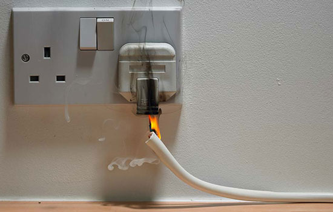

| Person 1 | Person 2 | Person 3 | Person 4 |
|  | We should unplug our sockets when not in use. Because this can create a spark. Many fire departments encourage homeowners to unplug appliances and devices when they aren't in use. |
||
| Unattended cooking is a leading cause of fire. Stay in the kitchen while you are frying, grilling, boiling, or broiling food. Always watch what you heat. Keep your cooking surfaces clean to prevent food and grease build-ups that could be easily ignited. |
|||
| We should always check our stove after we finish cooking. We dont know the risks that can cause when you are careless because not closing it properly will also lead to a huge spread of fire. |
|||
 |
Tobacco is manufactured to burn at over 700 degrees C and to stay alight, meaning it can remain smouldering and start a fire. When smokers fall asleep with a lit cigarette in hand, clothes, bedding or furniture can easily catch alight. |